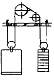
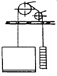
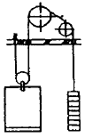
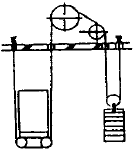
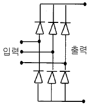

승강기기능사 (2002-04-07 기출문제)
1과목: 승강기개론
1. 엘리베이터의 문이 닫힘으로서 운행회로가 구성되는 스위치는?
- 도어스위치
- 과속스위치
- 비상정지스위치
- 종점스위치
(정답률: 91%)

2. 유압식 엘리베이터의 플런져에 관한 설명으로 옳지 않은 것은?
- 플런져와 플런져를 위한 연결 카프링의 파단강도는 직결식은 5 이상, 간접식은 10 이상의 안전률을 가져야 한다.
- 플런져의 길이는 플런져 외경의 100배를 초과 할 수 없다.
- 플런져의 재질은 주철을 사용할 수 없다.
- 편심하중을 받을 경우 카 플랫홈 하중의 수직방향 휨은 20mm 이내이어야 한다.
(정답률: 41%)
3. 로프거는 방법의 그림 중 잘못된 것은?




(정답률: 34%)
4. 엘리베이터의 부품 중 계전기는 주로 어느 회로에 사용되는 부품인가?
- 스위칭회로
- 아크발생 방지회로
- 충전회로
- 증폭회로
(정답률: 45%)
5. 주차장치 중 다수의 운반기를 2열 혹은 그 이상으로 배열하여 순환이동하는 방식은?
- 수직순환식
- 다층순환식
- 수평순환식
- 승강기식
(정답률: 45%)
6. 조속기 로프로는 주로 몇 ㎜ 가 사용되는가?(관련 규정 개정전 문제로 여기서는 기존 정답인 1번을 누르면 정답 처리됩니다. 자세한 내용은 해설을 참고하세요.)
- 8
- 10
- 12
- 16
(정답률: 72%)
7. 균형추를 사용한 승객용 승강기에서 제동기(Brake)의 제동력은 적재하중의 몇 % 까지는 위험없이 정지가 가능 하여야 하는가?
- 100
- 110
- 120
- 125
(정답률: 54%)
8. 승강기를 용도별로 분류할 때 사람과 화물을 모두 운반하는 승강기는?
- 승용승강기
- 화물용승강기
- 승화용승강기
- 침대용 승강기
(정답률: 70%)
9. 조속기는 무엇을 이용하여 스위치의 개폐작용을 하는가?
- 응력
- 원심력
- 마찰력
- 항력
(정답률: 71%)
10. 승강기 카(car)내부에 설치되는 것은?
- 유도착상장치
- 비상정지장치
- 카 가이드 슈
- 통화장치
(정답률: 75%)
11. 유압식 승강기의 종류를 분류할 때 적합하지 않은 것은?
- 직접식
- 간접식
- 팬터그래프식
- 밸브식
(정답률: 69%)
12. 승객용 엘리베이터에서 고장이나 정전시 카내에서 문에 손을 대어 억지로 여는데 필요한 힘은 어느 정도로 하는 것이 가장 적당한가?
- 1㎏이상 10㎏이하
- 5㎏이상 30㎏이하
- 40㎏이상 60㎏이하
- 50㎏이상 70㎏이하
(정답률: 75%)
13. 엘리베이터 카에 사용할 수 없는 유리는?
- 복층유리
- 망유리
- 강화유리
- 접합유리
(정답률: 48%)
14. 에스컬레이터의 구동장치에 관한 설명으로 옳지 않은 것은?
- 스탭 구동장치와 핸드레일 구동장치는 서로 연동되어 같은 속도로 이동해야 한다.
- 스탭체인 안전장치가 설치되어 체인이 끊어지면 전원을 차단해야 한다.
- 감속기는 효율이 높아 에너지를 절약할 수 있는 웜기어를 사용하며, 헬리컬기어는 사용하지 않는다.
- 구동장치에는 브레이크를 설치해야 한다.
(정답률: 70%)
15. 로프식 엘리베이터의 정격속도가 240m/min을 초과할 때 꼭대기 틈새와 피트 깊이로 가장 적합한 것은?
- 꼭대기 틈새 3.3m, 피트 깊이 3.3m
- 꼭대기 틈새 3.3m, 피트 깊이 3.8m
- 꼭대기 틈새 4.0m, 피트 깊이 4.0m
- 꼭대기 틈새 4.0m, 피트 깊이 4.3m
(정답률: 48%)
2과목: 안전관리
16. 가 최상층 및 최하층을 지나쳐 주행하는 것을 방지하는 것은?
- 리미트스위치
- 균형추
- 인터록 장치
- 정지스위치
(정답률: 81%)
17. 에스컬레이터와 윗층 바닥과의 교차하는 협각에 설치하는 안전물은?
- 셔터연동장치
- 삼각부 안내판
- 핸드레일 안전장치
- 비상정지스위치
(정답률: 66%)
18. 그림은 승강기 VVVF 제어회로의 일부이다. 회로의 설명 중 옳은 것은?

- 교류를 직류로 변환하는 회로이다.
- 교류의 PWM 제어회로이다.
- 교류의 주파수를 변환하는 회로이다.
- 교류의 전압을 변환하는 회로이다.
(정답률: 44%)
19. 정전작업시 취하여야 할 조치사항이 아닌 것은?
- 근로자가 위험이 없다고 판단되면 즉시 작업
- 통전금지에 관한 표지판 부착
- 잔류전하의 방전조치
- 단락접지기구를 사용하여 단락접지
(정답률: 76%)
20. 지혈시킬 때 구혈대로 가장 좋은 것은?
- 나무
- 철선
- 끈
- 고무줄
(정답률: 43%)
21. 사다리를 사용하는 작업에서 안전수칙에 어긋나는 행위는?
- 위험 및 사용금지의 표찰이 붙어서 결함이 있는 사다리를 사용 할 때는 주의하면서 사용한다.
- 사다리 밑끝이 불안전하거나 3m이상의 높은 곳이면 다른 사람으로 하여금 붙들게 하고 작업한다.
- 사다리를 문앞에 설치할 때는 문을 완전히 열어 놓거나 잠궈야 한다.
- 사다리 설치시에는 사다리의 밑바닥이 사다리 길이와 관련지어 어느 정도 벽에서 떨어지게 한다.
(정답률: 71%)
22. 전기기구를 취급하는 작업방법으로 알맞은 것은?
- 퓨즈가 끊어지면 만져도 된다.
- 스위치를 넣거나 끊는 것은 정확히 한다.
- 전기기구는 정지시에 아무나 만져도 된다.
- 전기기구는 담당자 부재시에는 주의해서 다룬다.
(정답률: 70%)
23. 나이프스위치의 충전부가 노출되면 무엇이 위험한가?
- 누전
- 감전
- 과부하
- 과열
(정답률: 66%)
24. 감전사고를 방지하기 위한 대책으로 볼 수 없는 것은?
- 작업자에 대한 안전교육
- 전기기기에 위험 표식
- 대지전압 200V이하의 전기기기만 사용
- 전기기기 및 장비의 정비
(정답률: 80%)
25. 재해조사의 방법이 아닌 것은?
- 현장의 물리적인 흔적을 수집한다.
- 재해현장은 사진을 촬영한다.
- 재해 피해자로부터 재해후에 취한 행동을 묻는다.
- 목격자, 현장 책임자에게서 사고시의 상황을 듣는다.
(정답률: 72%)
26. 안전점검시의 유의사항으로 옳지 않은 것은?
- 여러가지의 점검방법을 병용하여 점검한다.
- 과거의 재해발생 부분은 고려할 필요없이 점검한다.
- 불량 부분이 발견되면 다른 동종의 설비도 점검한다.
- 발견된 불량 부분은 원인을 조사하고 필요한 대책을 강구한다.
(정답률: 85%)
27. 재해의 원인분석의 개별분석방법에 관한 설명이 틀린 것은?
- 이 방법은 재해 건수가 적은 사업장에 적용된다.
- 특수하거나 중대한 재해의 분석에 적합하다.
- 청취에 의하여 공통 재해의 원인을 알 수 있다.
- 개개의 재해 특유의 조사항목을 사용 할 수 있다.
(정답률: 52%)
28. 자체검사의 기록사항이 아닌 것은?
- 검사 년월일
- 검사자의 성명
- 검사 환경
- 검사 방법
(정답률: 64%)
29. 승강기의 점검사항으로 그 유효기간이 가장 긴 것은?
- 기계의 유(Oil) 누설유무 확인 및 청소
- 조속기스위치의 접점상태 양호 여부 확인
- 승장버튼의 손상 유무 확인
- 트래블 케이블(TRAVELING CABLE)의 손상 유무 확인
(정답률: 50%)
30. 주유를 하지 않아야 하는 곳은?
- 베어링
- 웜기어박스 내부
- 조속기 축
- 브레이크라이닝
(정답률: 62%)
3과목: 승강기보수
31. 전자접촉기 등의 조작회로를 접지하였을 경우에 당해 전자접촉기 등이 폐로될 염려가 있는 것의 접속방법으로 옳은 것은?
- 코일의 일단을 접지하지 않는 쪽의 전선에 접속할 것
- 코일의 일단을 접지측 전선에 접속할 것
- 코일과 접지측 전선사이에 반드시 개폐기가 있을 것
- 코일과 접지측 전선사이에 반드시 퓨즈를 설치할 것
(정답률: 45%)
32. 엘리베이터의 카바닥 전면과 승강로 벽과의 수평거리는 몇 mm 이하인가?
- 30
- 55
- 125
- 225
(정답률: 66%)
33. 승강기 운행 중 정지 레벨(level)을 맞추는데 사용되지 않는 방법은?
- 브레이크로 조정
- 피트내 정지스위치로 조정
- 마그네틱테이프(magnetic tape)로 조정
- 감속거리로 조정
(정답률: 27%)
34. 카 상부에 탑승하여 작업할 때 지켜야 할 사항으로 틀린 것은?(오류 신고가 접수된 문제입니다. 반드시 정답과 해설을 확인하시기 바랍니다.)
- 정전스위치를 차단한다.
- 카 상부에 탑승하기 전 작업등을 점등한다.
- 탑승후에는 외부문부터 닫는다.
- 자동스위치를 점검쪽으로 전환한 후 작업한다.
(정답률: 36%)
35. 유압엘리베이터가 하강할 때의 작동유 흐름순서가 옳은 것은?
- 실린더→ 솔레노이드.체크밸브→ 유량제어밸브→ 탱크
- 탱크→ 체크밸브→ 유량제어밸브→ 탱크
- 실린더→ 탱크→ 체크밸브
- 탱크→ 유량제어밸브→ 솔레노이드.체크밸브→ 실린더
(정답률: 57%)
36. 주로프를 걸어 맨 고정부위에 대한 설명으로 옳은 것은?
- 2중너트로 조이고, 분할핀이 꽂혀 있어야 한다.
- 스포트용접하여 장력을 분산시킨다.
- 바빗트를 채우고, 인장강도를 낮춘다.
- 전기용접하여 적당한 탄력을 유지시킨다.
(정답률: 63%)
37. 에스컬레이터에서 사람이 탑승하여 운행하던 중 구동체인이 절단되었을 때 작동되는 장치가 아닌 것은?
- 브레이크 래치
- 전자브레이크
- 구동체인 안전장치
- 하부 안전스위치
(정답률: 39%)
38. 승강기에 사용되는 T형 가이드레일 1본의 길이는 몇 m인가?
- 3
- 5
- 8
- 10
(정답률: 65%)
39. 유압식 승강기에 대한 설명으로 옳지 않은 것은?
- 유압파워유니트의 체크밸브는 작동이 확실할 것
- 유압파워유니트는 승강기 각 카마다 설치되어 있을 것
- 수동하강밸브를 개방하였을 때 속도는 정격하강속도 이상일 것
- 작동유 온도가 5℃이하 60℃이상이 예측되는 경우에는 이것을 제어하는 장치를 할 것
(정답률: 49%)
40. 간접식 유압승강기의 주로프 본수는 카 1대에 대하여 몇 본 이상인가?
- 1
- 2
- 3
- 4
(정답률: 47%)
41. 카의 구조에 해당되지 않는 것은?
- 카내의 사람이나 물건에 의한 충격에 대해 견고할 것
- 구조상 경미한 부분을 제외하고는 불연재료로 할 것
- 출입구에는 문이 꼭 있을 것
- 가이드 레일은 견고할 것
(정답률: 43%)
42. 유압식 승강기의 정격속도가 60m/min일 경우 카가 최하층에 수평으로 정지되었다면 카와 완충기와의 거리는 최소 및 최대가 몇 ㎜ 정도이어야 하는가?
- 150∼600
- 150∼900
- 300∼600
- 300∼900
(정답률: 38%)
43. 권상용 와이어 로프의 안전률은 용도별로 규정하고 있다. 승용승강기의 안전률은 얼마 이상이어야 하는가?(오류 신고가 접수된 문제입니다. 반드시 정답과 해설을 확인하시기 바랍니다.)
- 4
- 6
- 8
- 10
(정답률: 39%)
44. 카위의 비상구출구가 개방되었을 때 발생되는 현상 중 옳은 것은?
- 주행 중에 비상구출구가 개방되면 계속 운전한다.
- 비상구출구가 개방되면 카는 언제든지 중단되는 구조이다.
- 비상구출구가 개방되면 카내에 조명이 꺼진다.
- 비상구출구 개방 유무에 관계없이 운행에 영향을 주지 않는다.
(정답률: 75%)
45. 감속기의 기어 치수가 제대로 맞지 않을 때 일어나는 현상으로 옳지 않은 것은?
- 기어의 강도에 악영향을 준다.
- 진동발생의 주요 원인이 된다.
- 카가 전도할 우려가 있다.
- 로프의 마모가 현저히 크다.
(정답률: 50%)
4과목: 기계,전기기초이론
46. 수평보행기의 경사도는 특수한 경우를 제외하고 몇 도 이하로 하여야 하는가?
- 12
- 18
- 25
- 30
(정답률: 64%)
47. 주전원이 380V인 엘리베이터에서 110V전원을 사용하고자 강압트랜스를 사용하던 중 트랜스가 소손되었다. 원인 규명을 위해 회로시험기를 사용하여 전압을 확인하고자 할 경우 회로시험기의 전압 측정범위 선택스위치의 최초 선택위치로 옳은 것은?
- 회로시험기의 110V미만
- 회로시험기의 110V이상 220V미만
- 회로시험기의 220V이상 380V미만
- 회로시험기의 가장 큰 범위
(정답률: 44%)
48. SCR의 게이트 작용은?
- ON-OFF 작용
- 통과전류의 제어작용
- 브레이크다운 작용
- 브레이크오버 작용
(정답률: 41%)
49. "회로망에서 임의의 접속점에 흘러 들어오고 흘러 나가는 전류의 대수합은 0 이다." 의 법칙은?
- 키로히호프의 법칙
- 가우스의 법칙
- 쥴의 법칙
- 쿨롱의 법칙
(정답률: 69%)
50. 연강의 인장강도가 3600kg/cm2일 때 이것을 안전률 6으로 사용하면 허용응력은 몇 kg/cm2 인가?
- 36
- 60
- 360
- 600
(정답률: 59%)
51. 전기용접기의 역률과 효율을 높이는 방법으로 옳은 것은?
- 1차측 전력을 낮춘다.
- 피복제를 개량한다.
- 저항을 설치한다.
- 무부하 전압을 낮춘다.
(정답률: 48%)
52. 직류발전기에서 무부하일 때의 전압을 Vo[V], 정격부하일 때의 전압을 Vn[V]라 하면, 전압변동률은 몇 % 인가?
- (Vo-Vn) / Vo x 100
- (Vo-Vn) / Vn x 100
- (Vn-Vo) / Vo x 100
- (Vn-Vo) / Vn x 100
(정답률: 45%)
53. 직류발전기의 구조에서 계자자속을 전기자 표면에 널리 분포시키는 역할을 하는 것은?
- 계철
- 브러쉬
- 자극편
- 리벳
(정답률: 40%)
54. 다이오드, 트랜지스터 등의 반도체 스위칭회로를 무슨 회로라 하는가?
- 전자개폐기회로
- 유접점회로
- 무접점회로
- 과전류계전기회로
(정답률: 49%)
55. 100V, 100W 전구의 전압의 평균값은 약 몇 V 인가?
- 90
- 100
- 111
- 141
(정답률: 28%)
56. 일반 전동기와 엘리베이터용 전동기의 차이점을 설명한 것 중 틀린 것은?
- 전부하시 회전수의 오차가 적어야 한다.
- 엘리베이터용 전동기는 반드시 전폐형 연속정격의 전동기를 사용해야 한다.
- 높은 기동토크와 충분한 제동력이 요구된다.
- 엘리베이터용 전동기는 기동빈도가 높아서 절연재료의 내열성이 요구된다.
(정답률: 46%)
57. 좌굴을 일으키는 원인이 아닌 것은?
- 축선이 휘었을 때
- 재질이 강철일 때
- 재질이 불균일할 때
- 편심하중이 작용할 때
(정답률: 54%)
58. 응력의 종류와 거리가 먼 것은?
- 수직응력
- 평면응력
- 전단응력
- 경사응력
(정답률: 31%)
59. 캠이 가장 많이 사용되는 경우는?
- 요동운동을 직선운동으로 할 때
- 왕복운동을 직선운동으로 할 때
- 회전운동을 직선운동으로 할 때
- 상하운동을 직선운동으로 할 때
(정답률: 57%)
60. 자기력선의 성질을 설명한 것 중 옳지 않은 것은?
- 자기력선은 자석의 N극에서 시작한다.
- 자기력선은 자석의 S극에서 끝난다.
- 자기력선은 N극과 S극을 말한다.
- 자기력선은 상호간에 교차하지 않는다.
(정답률: 42%)